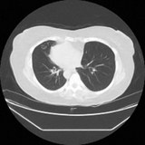
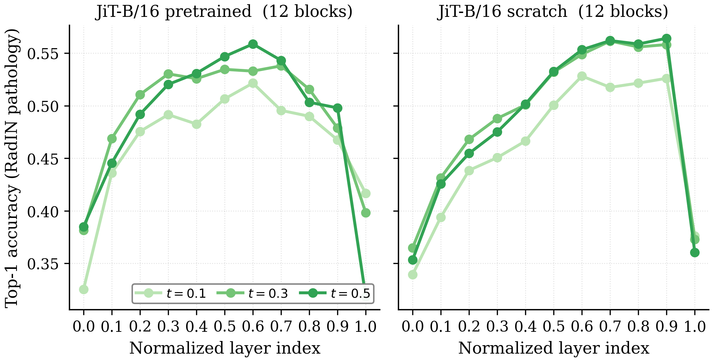
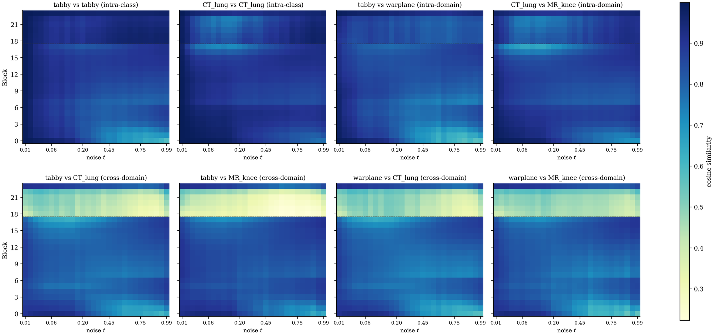
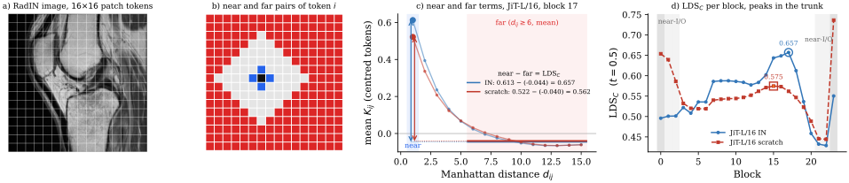
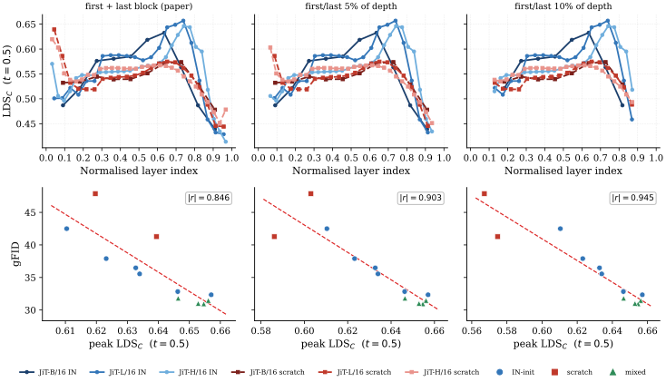

From Natural Images to Medical Scans

:Transferability of Diffusion Models for Medical Image Generation
TL;DR: Initialising diffusion transformers with ImageNet weights improves medical image generation, in both latent and pixel space denoising. Natural-image initialisation results in more spatially structured representations, not more semantic ones, and this spatial structure (LDSC) correlates with generation fidelity. Mixing natural with medical images also improves medical fidelity, while early-to-mid representations stay similar across domains in the mixed model. Last but not least, natural-image pretraining outperforms or matches medical-image pretraining in our setup.
Setup
Models
- Pixel space: JiT-B/16 (131M), JiT-L/16 (459M), JiT-H/16 (952M)
- Latent space: LightningDiT-XL/1 on VAVAE, LightningDiT-XL/2 on SDVAE and MedVAE (675M)
- Joint denoising: V-Co-B/16 with DINOv2 (260M)
- Initialisation: ImageNet-pretrained vs random (and RadImageNet for BraTS)
Data
- RadImageNet: CT and MR scans, 256×256
- BraTS-GLI 2024: brain MRI, 2D axial slices, 256×256, single-channel and 4-channel
- ImageNet: source of the pretrained checkpoints only
- Metrics: gFID for generation quality (lower is better, cfg = 1.0); linear-probe classification accuracy for semantics; LDSC for spatial structure
Results
-
Finding A
Natural-image transfer improves medical image generation.
The case of RadImageNet
- Transfer helps, and most in pixel space. In latent space, LDiT-XL/1 improves by 13.8%, whereas in pixel space JiT improves by 34.3% (B), 21.6% (L), and 31.4% (H). Latent thus attains the best absolute performance (16.43), while pixel gains most from transfer (21–34%).
- The tokeniser explains this gap: natural-image VAEs compress images 8–16× and reconstruct radiology well (1.88 rFID) despite no medical training, giving the denoiser much of the transferable prior already. Pixel diffusion has no such bottleneck: the denoiser benefits from the prior directly, so transfer helps more.
Denoiser gFID↓ Δinit (%) Random IN Latent denoising LDiT-XL/2+MedVAE21.33 — — LDiT-XL/2+SDVAE19.15 — — LDiT-XL/1+VAVAE19.05 16.43 2.6 (13.8%) Pixel denoising JiT-B/1655.50 36.48 19.0 (34.3%) JiT-L/1641.27 32.34 8.9 (21.6%) JiT-H/1647.89 32.83 15.1 (31.4%) Joint denoising V-Co-B/16+DINOv2— 28.86 — Medical-image model Natural-image modelTable 1. RadImageNet (RadIN) 256×256 gFID across the three denoising paradigms. Δinit and Δinit% are the absolute and relative gFID improvement of IN vs Random Denoiser. Bold = best per category.
The case of BraTS
- Single-channel MRI reproduces the transfer pattern. IN initialisation improves both latent and pixel-space models: LDiT-XL/1 by 1.56 gFID and JiT-L/16 by 8.59, again a larger absolute gain in pixel space.
- Multi-channel generation benefits from capacity. IN initialisation nonetheless remains beneficial, improving JiT-L/16 by 8.80 gFID over Random, with JiT-H/16 outperforming JiT-L/16.
(a) Single-channel
Denoiser gFID↓ Δinit Random IN Latent denoising LDiT-XL/19.22 7.66 1.56 Pixel denoising JiT-L/1637.93 29.34 8.59 JiT-H/16(10 ep.)— 29.13 — (b) Multi-channel
Denoiser gFID↓ Δinit Random IN Pixel denoising JiT-L/1643.97 35.17 8.80 JiT-H/16— 32.75 — Table 2. BraTS-GLI 256×256 gFID across single- and multi-channel diffusion. (a) Single-channel: the denoiser randomly generates one of the four MRI modalities; (b) Multi-channel: the denoiser generates all four MRI modalities. Epochs: 40 in (a), except JiT-H/16 (10); 55 in (b). Bold = best per panel.
Do FID gains carry clinical signal?
- We train two JiT-B/16 (scratch; IN) models on the whole RadIN, conditioned on all 67 classes, and generate 100k samples over the 19 (validation) classes, so their gFIDs differ from Table 1. Together with 100k real training samples, this gives three 100k pools with identical pathology distributions.
- We find that lower gFID translates to lower FD-Rad, i.e., more clinically meaningful images, and to macroF1 improvements of a ResNet-50 pathology classifier trained on the synthetic data.
Denoiser gFID↓ FD-Rad↓ macroF1↑ JiT-B/1640.81 37.99 0.47 JiT-B/1672.67 87.46 0.43 Clinical proxies on synthetic data. We measure FD-Rad and macroF1 on two synthetic 100k pools. A classifier trained on the real data pool achieves 0.72.
-
Finding B
What transfers: spatial structure, not semantics (it helps learn better spatially structured features, not more semantic features).
Since the pixel denoiser carries the entire prior, we focus on pixel-space JiT and ask whether the benefit reflects
high-level (semantics) or low-level (spatial) structure.
Semantics do not predict generation quality
- One hypothesis is that pretraining helps via semantics, either by transferring semantic features or by providing an initialisation from which it learns stronger semantics.
- We probe frozen denoiser representations to classify the 19 pathology classes of RadIN. Since the generative models are conditioned on 5 broad anatomy classes, probes capture semantic information beyond generation labels.
- Higher probe accuracy does not translate to better generation. JiT-B/16 from scratch probes similar to its IN counterpart (0.56) yet generates far worse samples (55.50 vs 36.48 gFID). JiT-B/16 probes slightly higher than JiT-H/16 (0.56 vs 0.54) but has worse gFID (36.48 vs 32.83). In latent space the scratch model also probes higher than the IN-init (0.557 vs 0.510) while generating worse.
- Semantic separability cannot explain the transfer benefit.

Semantic probing. Top-1 accuracy of linear probes on frozen JiT-B representations classifying 19 RadIN pathology classes, by layer depth and noise level t. Averages over three runs. IN-initialised models exhibit better spatial structure
- An alternative hypothesis is that the benefit comes from spatial (low-level) structure.
- We calculate LDSC (Appendix), a metric of the spatial structure in the internal representations, for all models, and find that IN-initialised models consistently outperform their randomly initialised counterparts, by 2.8%–10.3% (B/16 10.3%, L/16 2.8%, H/16 4.3%).
Denoiser Random IN JiT-B/160.574 0.633 JiT-L/160.639 0.657 JiT-H/160.620 0.646 Peak LDSC per model. Max LDSC across JiT layers (first and last block excluded), at t = 0.5.
Spatial structure correlates with gFID
- We find that gFID correlates with LDSC (Appendix): |r| = 0.846 over 12 models. The fitted law is ΔgFID = −296.6 × ΔLDSC.
- From the LDSC gap alone, the fitted law predicts 92/58/52% of the pretrained-scratch gFID gap for B/L/H (67% on average). Two checks confirm this: Monte-Carlo perturbation of every gFID by σ = 1 (roughly the seed noise) gives 69 ± 6% over 5k refits, and refitting without the predicted size gives 95/62/42%. LDSC predicts about two-thirds of the pretraining benefit.
- Better spatial organisation is one channel through which pretraining manifests.
LDSC correlation with gFID across 12 JiT variants. LDSC here is the max value across JiT layers, at t = 0.5. -
Finding C
Mixed-domain training helps.
Early-to-mid representations are shared across domains
- We further test the structural hypothesis and train JiT-L/16 jointly on RadIN and 10% IN (mixed-JiT-L/16), so a single model represents both domains internally, and measure the per-block cosine similarity of its representations (concatenated over the token sequence) under natural and medical inputs.
- Early-to-mid blocks (0–16) stay highly similar across domains (cos ≥ 0.7), so the model computes similar representations for both domains there.
- Deeper blocks (17–22) behave differently: cross-domain similarity drops (cos ≈ 0.35–0.50), suggesting domain-specific behaviour.
- In the same network and the same blocks, intra-class and intra-domain pairs stay highly similar (cos ≈ 0.9), so the drop is specific to cross-domain pairs.

Cosine similarity of internal representations in mixed-JiT-L/16. Blocks (y-axis) and noise levels t (x-axis). Intra-class and intra-domain pairs (top row); cross-domain pairs (bottom row). Natural-image mixing helps medical fidelity
- Since both domains yield similar representations, we sweep the ratio of natural images added to the mix. gFID improves across all ratios, with the largest gain (1.4 gFID) at 15%.
- Even at 1:1 we observe a small improvement, though its magnitude sits near gFID noise.
IN mix (%) 0 5 15 25 50 RadIN:IN 1:0 19:1 5.7:1 3:1 1:1 gFID↓ 32.34 31.46 30.94 31.01 31.80 Natural-image mixing. gFID of JiT-L/16 (IN) trained for 80 epochs on mixed medical and natural data.
-
Finding D
Natural-image transfer outperforms medical pretraining (in our setup).
A natural alternative to IN-init is to pretrain on medical data directly. To our knowledge no 2D radiology
denoiser weights exist at a compatible architecture, so we train our own. We test two cases: single and
multi-channel target domain.
Single-channel target
- We (pre)train a JiT-B/16 from scratch on RadIN for 160 epochs and fine-tune it to single-channel BraTS for 20 epochs. Notably, directly fine-tuning the IN-init model for 20 epochs is better by 5 gFID points.
- Adding a RadIN stage on top of IN slightly improves, though near seed std (σIN = 0.41).
JiT-B/16 → single-channel BraTS; pill length ∝ training examples (RadIN epochs)gFID↓random→RadIN160 ep→BraTS 1ch20 ep36.73ImageNet→BraTS 1ch20 ep31.73ImageNet→RadIN80 ep→BraTS 1ch20 ep31.13Denoiser (init) Pretrain Ep. gFID↓ JiT-B/16 (Rand)RadIN160 36.73 JiT-B/16 (IN)RadIN80 31.13 JiT-B/16 (IN)— — 31.73 Single-channel BraTS transfer.
Multi-channel target
- We test whether an intermediate single-channel medical stage helps before transferring to multi-channel BraTS. Direct IN transfer is the best (40.17).
- Inserting a medical stage only hurts, giving 50.9 after single-channel BraTS and 75.4 after RadIN.
JiT-L/16 → multi-channel BraTS; pill length ∝ training examples (RadIN epochs), same target blockgFID↓ImageNet→RadIN80 ep→BraTS 4ch30 ep75.4ImageNet→BraTS 1ch40 ep→BraTS 4ch30 ep50.9ImageNet→BraTS 4ch30 ep40.17Denoiser (init) Pretrain Ep. gFID↓ JiT-L/16RadIN30 75.4 JiT-L/16BraTS30 50.9 JiT-L/16— 30 40.17 Multi-channel BraTS transfer.
RadIN pretraining BraTS pretraining IN-initialised denoiser
Discussion
Natural-image (ImageNet) initialisation of the denoiser improves medical image generation (Finding A). Semantics do not explain this benefit since models trained from scratch reach similar semantic probe accuracy yet generate worse samples. Spatial structure is a stronger candidate. LDSC, a spatial structure metric adapted to internal denoiser representations, predicts about two-thirds of the pretraining benefit (Finding B). Therefore, better spatial organisation is one channel through which pretraining manifests. Natural and medical images have very different high-level content. Yet a mixed-domain denoiser computes similar early-to-mid representations for both domains and separates them only in its late blocks. Furthermore, mixing natural images into medical training improves medical gFID (Finding C). Both results point towards lower-level information shared across the two domains. Finally, medical pretraining does not give a further boost in our experiments (Finding D). Together, these results show that, from a generative modelling lens, natural images are very useful for medical image generation: both the information transferred through initialisation and the representations that it enables the model to learn benefit medical fidelity.
Appendix
LDS and LDSC
- Spatial structure metrics describe an image by its internal layout, e.g., how each patch resembles the other patches of the same image, rather than by its appearance.
- Singh et al. measure this on the target representation of representation alignment. We measure it on the internal representations of the denoiser itself.
- A 256×256 image gives a 16×16 grid of patch tokens.
- For each pair of tokens i, j, we take their cosine similarity Kij and their Manhattan distance dij on the grid.
- LDS compares near pairs (adjacent tokens, dij = 1) with far pairs (dij ≥ 6):
- LDSC makes two changes: 1) mean-centres the tokens before the cosine, and 2) excludes the I/O blocks, whose representations stay close to the pixel space.
- We report the peak over blocks at t = 0.5.

Robustness to the I/O exclusion
- The paper excludes only the first and last block.
- In deeper models, the near-input region is longer. The L/16 and H/16 scratch models reach their highest LDSC in block 1, which makes their IN vs. scratch gap small (2.8% and 4.3%, vs. 10.3% for B/16).
- If we exclude 5% or 10% of the depth at each end, the scratch peaks move into the trunk, and the gap becomes similar for all sizes (10.3 / 14.3 / 13.9% at 10%).
- The correlation with gFID increases (|r| = 0.846 → 0.903 → 0.945), and the IN peaks do not change. The paper rule is the conservative choice.

Seed variance
- The seed noise is small compared with the IN–random gap (JiT-B/16 on RadIN: σIN = 0.41, σRand = 1.02 gFID over three seeds).
BibTeX
@inproceedings{georgiou2027natural,
title = {From Natural Images to Medical Scans: Transferability of Diffusion Models for Medical Image Generation},
author = {Georgiou, Efthymios and Kakogeorgiou, Ioannis and Br{\"u}ningk, Sarah},
booktitle = {2027 IEEE/CVF Winter Conference on Applications of Computer Vision (WACV)},
year = {2027}
}